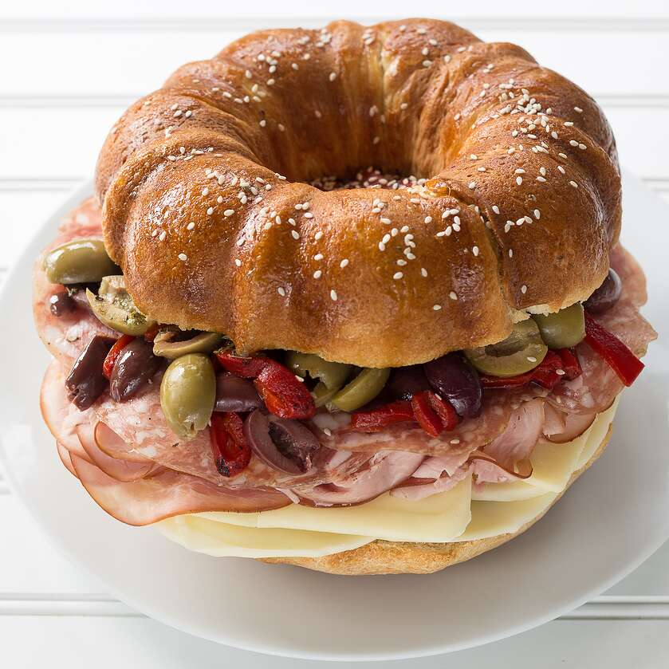

Sandwich

Description
This giant sandwich is perfect for a party or a picnic.
Ingredients
- 1 serving cooking spray
-
2 (11 ounce) cans refrigerated French bread dough (such as Pillsbury®)
- ⅓ cup olive oil
- 1 tablespoon Italian herbs
- 1 (8 ounce) package sliced provolone cheese
- ½ (8 ounce) package sliced mozzarella cheese
- 1 (8 ounce) package thinly sliced deli ham
- 1 (4 ounce) package thinly sliced deli salami
- 10 green olives, sliced
- 10 black olives, sliced
- ½ cup sliced fire-roasted red peppers
- 1 teaspoon olive oil
- 1 teaspoon sesame seeds
Steps
-
Preheat oven to 350 degrees F (175 degrees C). Grease a fluted tube pan
(such as Bundt®) with cooking spray.
-
Remove bread dough from the packaging and pinch ends together to create
a ring. Place the ring in the prepared pan.
-
Bake in the preheated oven until golden brown, 30 to 35 minutes.
Transfer pan to a wire rack to cool, about 20 minutes.
- Cut cooled bread in half using a serrated bread knife.
-
Mix 1/3 cup olive oil with Italian herbs in a small bowl; brush over cut
sides of the bread using a pastry brush.
-
Arrange provolone cheese, mozzarella cheese, ham, salami, green olives,
black olives, and red peppers over the bottom half of the bread. Cover
with top half of the bread. Brush the top with 1 teaspoon olive oil;
scatter sesame seeds on top. Cut into slices before serving.